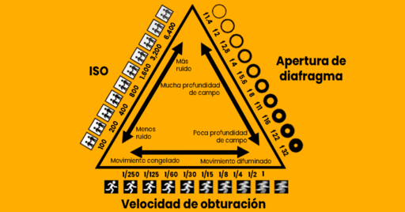

Triangulo de exposición
El triángulo de exposición es un principio técnico
el cual está compuesto por tres componentes presentes
en tu cámara fotográfica. Estos tres componentes
interactúan entre si formando un triángulo a la hora
de hacer fotografía. Dichos componentes son: apertura
de diafragma, velocidad de obturación e ISO.

Apertura de diafragma
Se refiere al tamaño del orificio circular en la lente
que controla la cantidad de luz que entra al sensor
de la cámara, a través de diferentes diafragmas o
número f, por lo tanto a menor número = mayor
entrada de luz habrá en nuestra imagen y viceversa,
a mayor número = menor entrada de luz.También debemos mencionar que
la apertura de diafragma controla la profundidad de campo.
Velocidad de obturacion
La velocidad de obturación es la variable que controla
el tiempo de exposición de la luz en la imagen final,
en palabras más técnicas, es el paso de la luz que
nuestro obturador permite entrar mientras permanece
abierto según el tiempo configurado.
ISO
Esta variable controla la sensibilidad del sensor a la
luz. En palabras directas si configuras un ISO demasiado
alto, tu sensor será tan sensible a la luz que comenzarán
a formarse puntitos en tu imagen este efecto es comunmente
conocido como ruido o granos.